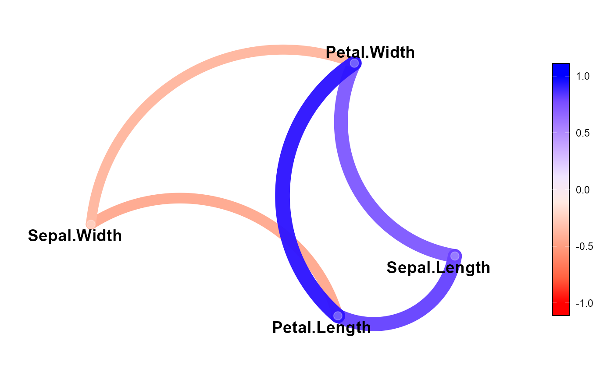
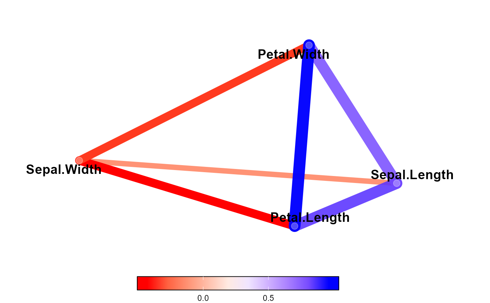

Produces a network plot of a correlation matrix or an object computed with
corr_coef(). Variables that are more highly correlated appear closer
together and are joined by stronger (more opaque) and wider paths. The proximity of the
points is determined using multidimensional clustering, also known as
principal coordinates analysis (Gower, 1966). The color of the paths also
indicates the sign of the correlation (blue for positive and red for
negative).
Usage
network_plot(
model,
min_cor = NULL,
show = c("signif", "all"),
p_val = 0.05,
legend = c("full", "range"),
colours = c("red", "white", "blue"),
legend_width = 1,
legend_height = 15,
legend_position = c("right", "left", "top", "bottom"),
curved = TRUE,
angle = 90,
curvature = 0.5,
expand_x = 0.25,
expand_y = 0.25
)Arguments
- model
A model computed with
corr_coef()or a symmetric matrix, often produced withstats::cor().- min_cor
Number to indicate the minimum value of correlations to plot (0-1 in absolute terms). By default, all the correlations are plotted when
modelis a matrix, and significant correlations (p-value < 0.05) whenmodelis an object computed withcorr_coef().- show
The correlations to be shown when
modelis an object computed withcorr_coef(). Either"signif"(default) to show only significant correlations or"all"to show all the correlations.- p_val
The p-value to indicate significant correlations. Defaults to
0.05.- legend
The type of legend. Either
"full"(ranges from -1 to +1) or"range"(ranges according to the data range). Defaults to"full".- colours
A vector of colors to use for n-color gradient.
- legend_width
The width of the legend (considering
position = "right")- legend_height
The height of the legend (considering
position = "right")- legend_position
The legend position. Defaults to
"right".- curved
Shows curved paths? Defaults to
TRUE.- angle
A numeric value between 0 and 180, giving an amount to skew the control points of the curve. Values less than 90 skew the curve towards the start point and values greater than 90 skew the curve towards the end point.
- curvature
A numeric value giving the amount of curvature. Negative values produce left-hand curves, positive values produce right-hand curves, and zero produces a straight line.
- expand_x, expand_y
Vector of multiplicative range expansion factors. If length 1, both the lower and upper limits of the scale are expanded outwards by mult. If length 2, the lower limit is expanded by
mult[1]and the upper limit bymult[2].
References
Gower, J.C. 1966. Some Distance Properties of Latent Root and Vector Methods Used in Multivariate Analysis. Biometrika 53(3/4): 325–338. doi:10.2307/2333639
Examples
cor <- corr_coef(iris)
network_plot(cor)

network_plot(cor,
show = "all",
curved = FALSE,
legend_position = "bottom",
legend = "range")
